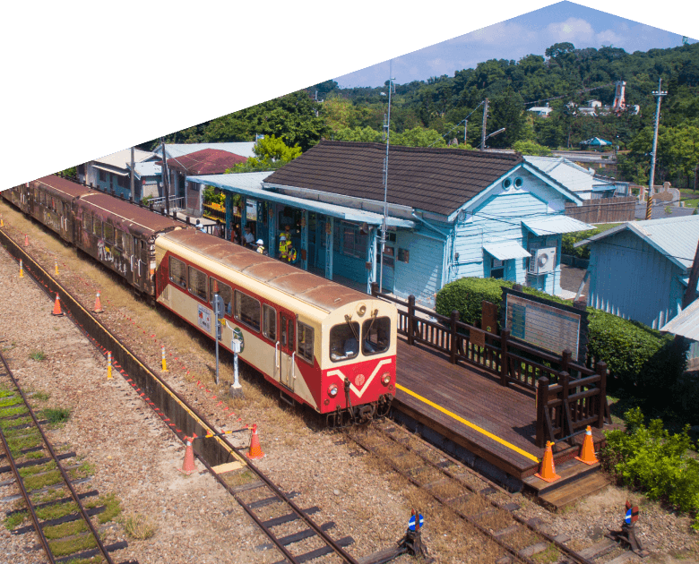
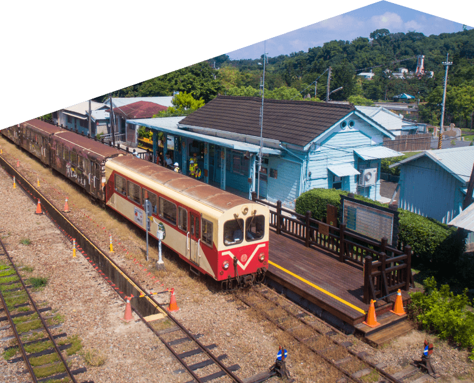
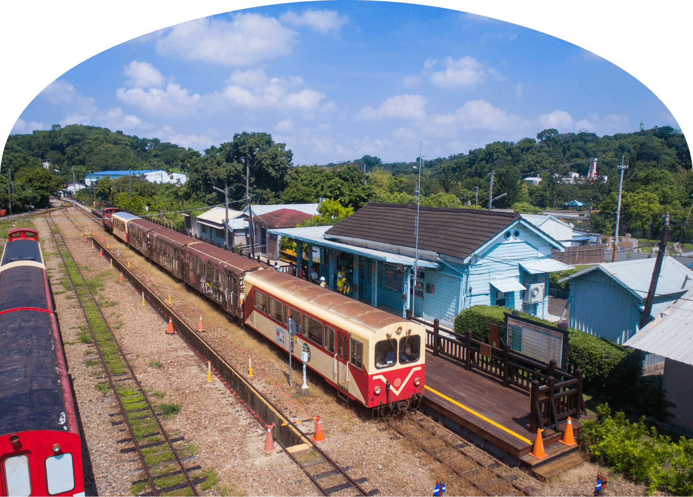
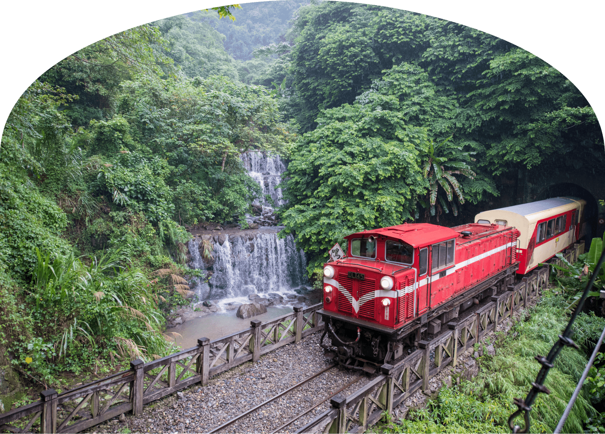
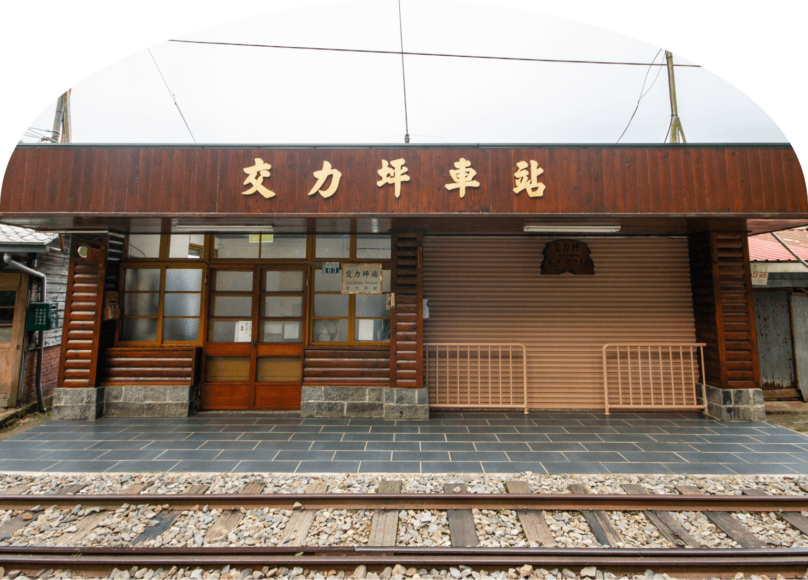
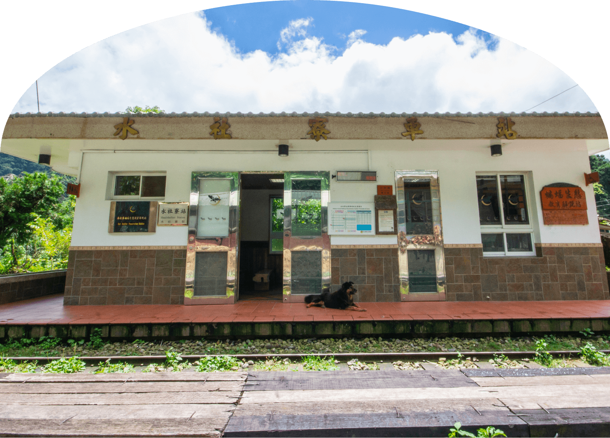
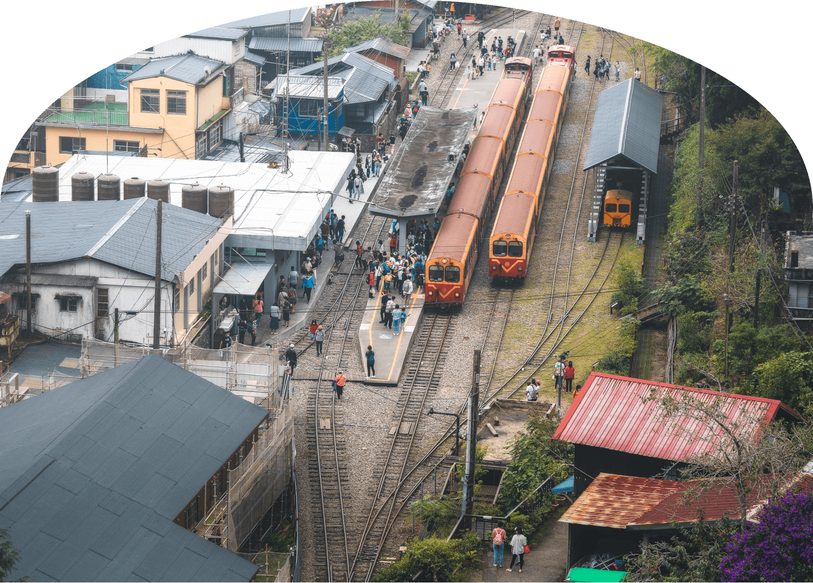
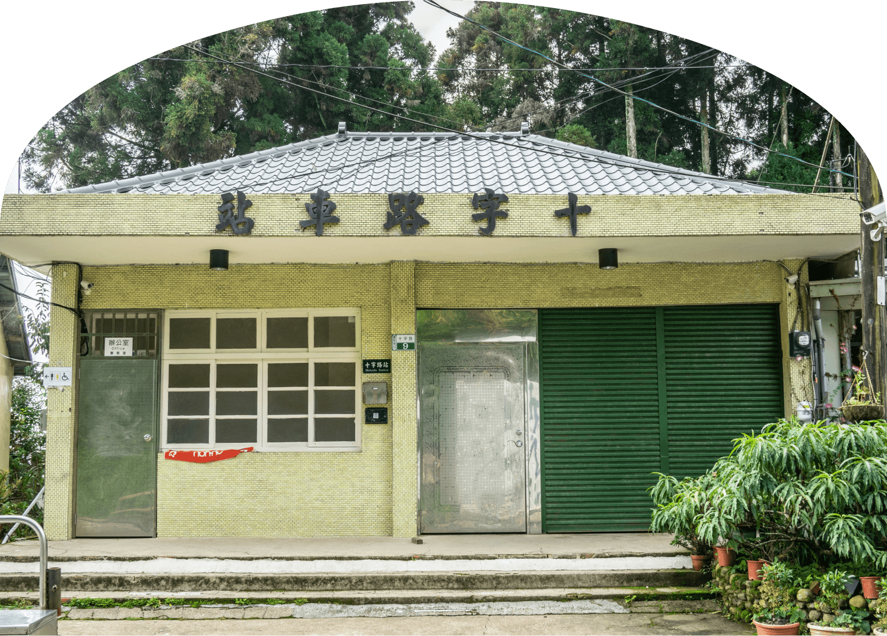
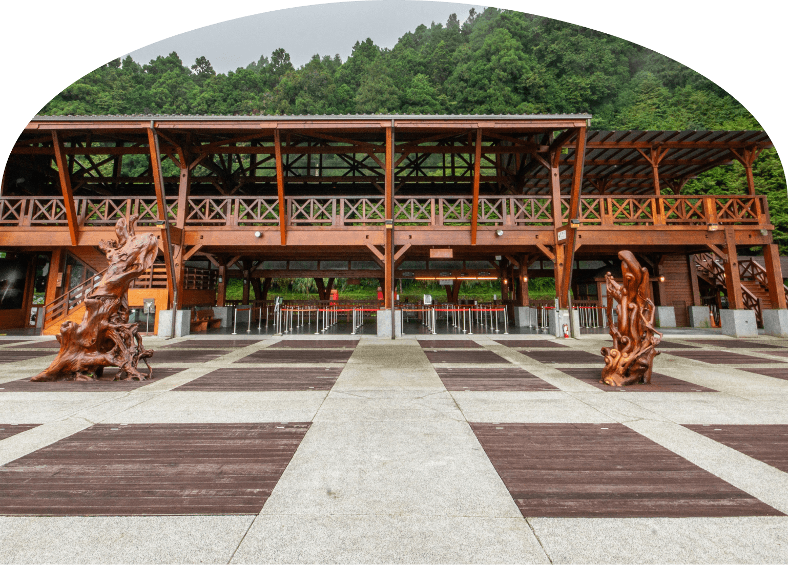
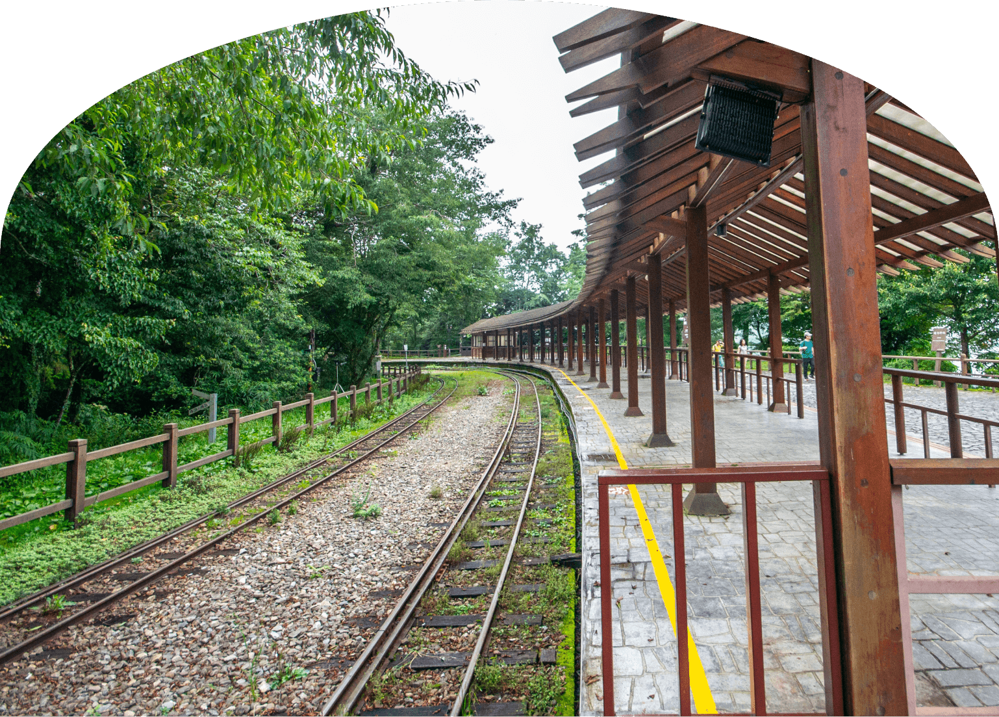

嘉義火車站
北門
鹿麻產
海拔82公尺
大阪式全檜木建築車站，美拍的熱門景點

竹崎
海拔127公尺
Tiffany藍的日式木造車站，鐵路的登山起點
木屐寮
海拔324公尺
本站無停靠，此地早期盛產製作木屐的好材料—鵝掌柴
樟腦寮
海拔543公尺
X形折返式車站，此地曾是臺灣樟腦重要的輸出地點

獨立山
海拔743公尺
獨立山螺旋登山路段，3種角度看樟腦寮車站
梨園寮
海拔904公尺
無人招呼站，螢河鐵道秘境

交力坪
海拔997公尺
日式懷舊車站，可遠眺瑞豐峽谷全貌

水社寮
海拔1186公尺
行經8個隧道，軌道呈現180度「Ω」字形

奮起湖
海拔1403公尺
充滿懷舊風情的車站、山城，鐵路登山線最大中繼站
多林
海拔1516公尺
全線最有秘境感的車站，車站建築彩繪鄒族圖騰

十字路
海拔1534公尺
來吉、達邦等部落的古道交會處，公路和鐵路最靠近的地方
屏遮那
二萬平
海拔2000公尺
視野極好能一覽群山，是觀夕照、晚霞、雲海的絕佳地點

阿里山
海拔2216公尺
全台最大的木造建築車站，微彎半拱的木柱月台
沼平
海拔2274公尺
由日本五十嵐設計師親手打造，以無鐵釘工法展現復古日式鐵道風華

對高岳
海拔2405公尺
本站無停靠，木造弧形月台，在月台賞日出、追銀河星空
祝山
海拔2405公尺
臺灣鐵路最高點，雲頂上最美的車站
神木
海拔2138公尺
因曾有神木而聞名，探索山林美景與鐵道文化的必訪之地